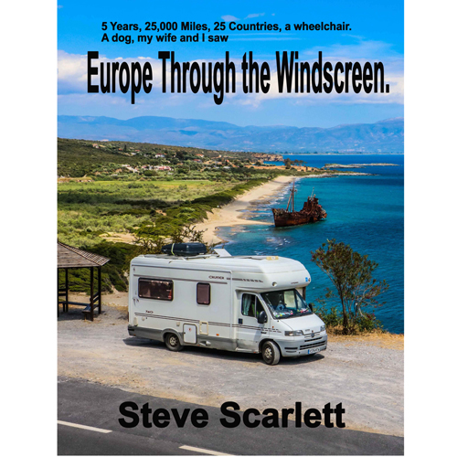
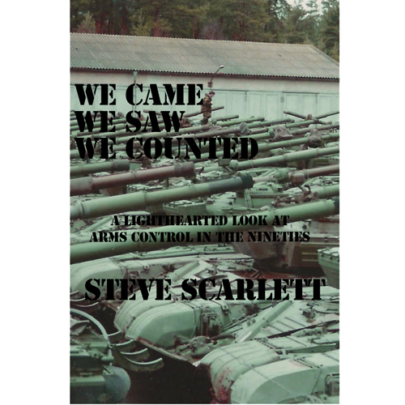

The Chain Diaries - New for 2022
She'll do what it takes to get her boys back.
In early 1994, Angela Nemazi learns that she may have a rare hereditary disease that ultimately caused her mother’s death. If she has the disease, her three young sons may have it. Her husband, Benyamin, is a bodyguard at the Iranian embassy in London. While she is away visiting her recently widowed father in Plymouth, Ben is linked to a murder and the police want to question him. The day after she gets back from Plymouth, Ben flees to Tehran, taking the children with him. It is imperative that the children are tested for the disease. One failed attempt to bring the boys home results in Angie’s incarceration in the notorious Evin prison. Despite the threat of Evin, or worse, hanging over her, this does not deter her. Even with Ben’s unlimited resources to prevent her from escaping with the children, she tries again. Planning the escape, she finds out that Ben might be involved in more than one killing. If they make it back to England, she knows that Ben will come for her, and the boys.

Angie sat on the grass, watching the boys playing.
Was this the park where the bodies were buried?
Testimonials
- “I have to say that it is a great story, well-written with a great twist at the end.” Alan Hazel
- “It’s an exceptional book in my humble view which I read from start to finish.” Brian Drakeford
- “A great read with masses of various knowledge of people, places and events. Quite scary at times but very compelling. I couldn’t put my pooter down.” Graham Stanton
- “I thought the story was brilliant and very inventive with good research on Iran giving it the accuracy such readers of these types of books demand. The unexpected ending caught me right out and if the sequel is anything as good, get writing.” Paul Gidney
- A great story that took me on a journey populated with tension, intrigue and emotion that kept me absorbed and involved from start to finish.” Ian Wishart
- Audio: What a fantastic first book. I thoroughly enjoyed it. It has been a privilege to able to listen to it early. Thank you so much. I hope you feel very proud. Frank Lloyd-Murray
The Story Behind The Story
November 1994, I was a Royal Navy Petty Officer, employed by a predominantly Army unit based at an RAF Station working for JACIG, an arms control organisation. I was coming back from a CFE Arms Control inspection with the US Military (OSIA) to Russia. I had spent a couple of weeks as a guest at the US Air Force Base in Frankfurt-am-Maine and was flying back to the UK. It was the day after Thanksgiving. I remember, because I still had a hangover. When we landed at Heathrow at 2230hrs I noticed a woman struggling to dress four young boys, get their coats on, and get them off the plane. My offer to assist was gratefully received. She intended spending the night on a London station with her sons, the oldest of which was about six, before catching a train at 0530hrs to meet her father two hundred miles away. By a sheer stroke of luck, I had a hire car, I was going in the same direction, and I was going most of those miles. I offered to take her. An hour later, two kids asleep on the back seat, two asleep in the rear foot wells she sat beside me as we drove along the motorway and told me how she’d escaped from an abusive husband in Iran and bought the children with her. It was an interesting tale. We stopped off at my house at around 0100hrs, a bit of a shock for my wife when I turned up with a woman and four kids. To be fair, three of the kids stayed in the car, asleep, while the woman, let’s call her Canda, had a drink and used the toilet. We got on the road again and I dropped her off at about 0200hrs on a foggy bridge, handing her over to her father, like in a spy novel. I never heard from them again (pre-email and social media era). Twenty-five years later I used her story as a seed to create both a screenplay and a novel. Neither of them are her story. My protagonist’s name is Angie, named after the first boxer we owned and the operation, Rogue Storm, is named after our next two boxers. While doing research and adhering to the Author’s Code of ‘What If?’, I asked, “What if her husband wasn’t just a bully and misogynist, what if he was something more?” I ‘tripped’ over The Chain Murders purely by accident, incorporated them into the story, and Ben, her husband, became a master assassin. Another writer’s adage is, “write what you know”. With that in mind, quite a few parts of the book are taken from experiences I had in the Navy, places I’ve been, including Dubai and the Falklands. Crowborough in East Sussex, my home town, and Ashdown Forest are also featured. I hope, you enjoy the book.
Steve Scarlett

Read The Prologue
The prologue sets the scene and hopefully hooks the reader into purchasing the book, if they haven't already done so on reading the back cover blurb. The book will not be for everyone and there are some distressing scenes in it. I did a bit of research, read a couple of books on events similar to what Angie, the protagonist, may have found herself in. "Not without My Daughter by Betty Mahmoody" and "Prisoner of Tehran: One Woman's Story of Survival Inside a Torture Jail by Marina Nemat." I have mentioned the first book in mine, only as a reference." Enjoy!
Listen to the Audio.
I was told creating an audio was a simple process. It's not. I was also told I was the best person to read my book. Possibly. I was told it would make me evaluate some of my writing. It did. If you're reading audio for a memoir, self-help book, possibly poetry, where only one character is doing to talking throughout then, yes, it's a simple enough process. However, if you're recording a novel, you have a few other things to consider. Different characters, accents, moods and emotion. You need a good grounding in acting skills. I have none of that. Still, I gave it my best shot. Listen if you have to but, be warned, I'm not a professional.
The Screenplay
Where it all started. Writing a screenplay is easier than writing a novel. (lim) For a start, 120 pages is about the maximum you want to be aiming at, especially as a newbie. This is because each page is around a minute on screen and producers like to keep the minutes down. I'm not saying it's easy to write a screen play but the requirements to write descriptive prose is not needed (as much). That said, there are idiosyncrasies within that particular industry that can leave a total novice like myself, totally bemused. I persevered, submitted my offering to a competition, made semi-final. Proud as punch.
Future Projects
Europe Through The Windscreen
5 years, 25,000 miles, 25 countries, a dog, a wheelchair, my wife and I.
My wife had a stroke in 2011, by 2014, her condition was such, she constantly required a wheelchair. We had taken two holiday flights in previous years but the hassle of getting the wheelchair and luggage on and off the aircraft was proving too much. In July 2014 we bought an ageing mobile home (Y-2001). It had done only 35,000 miles. Our first trip was to The Lake District and Scotland. (We live in Sussex). The following year, 2015, we took it to France, Spain, Portugal, Andorra and Italy. The next two years we made similar trips, to different countries. The image on the book (left) is of Greece. During the pan-European tour, I kept a Facebook log and posted daily. I have 250,000 words burning a hole in my hard-drive. Another work in progress. Sadly, my wife’s condition, specifically her ability to walk short distances, deteriorated to a point where she could no longer get in and out of the van and in 2018 we had to sell it. Five years and money well spent.

We Came, We Saw, We Counted
A lighthearted look at arms control in the ninties.
Between August 1990 and November 1997, I worked for JACIG, a joint service arms control organisation. This book would be a series of anecdotes supplied by friends and colleagues who were also involved. We inspected nations across Eastern Europe and hosted those same nations in the UK, Germany, and other places we had troops. I will not lie, some vodka was consumed. It is a work in progress and my name will not be the only one to be credited.
I will point out, in light of recent events, that the remit of the Arms Control Agreements implemented at that time were to ensure that a single nation, or as a whole, the Warsaw Pact Alliance (WPA) would not be able to mount an attack on NATO forces or vise versa. It was never envisioned that a country from within the WPA would attack one of it’s former members.

Testimonials
- “I have to say that it is a great story, well-written with a great twist at the end.” Alan Hazel
- “It’s an exceptional book in my humble view which I read from start to finish.” Brian Drakeford
- “A great read with masses of various knowledge of people, places and events. Quite scary at times but very compelling. I couldn’t put my pooter down.” Graham Stanton
- “I thought the story was brilliant and very inventive with good research on Iran giving it the accuracy such readers of these types of books demand. The unexpected ending caught me right out and if the sequel is anything as good, get writing.” Paul Gidney
- A great story that took me on a journey populated with tension, intrigue and emotion that kept me absorbed and involved from start to finish.” Ian Wishart
- Audio: What a fantastic first book. I thoroughly enjoyed it. It has been a privilege to able to listen to it early. Thank you so much. I hope you feel very proud. Frank Lloyd-Murray
The Story Behind The Story
November 1994, I was a Royal Navy Petty Officer, employed by a predominantly Army unit based at an RAF Station working for JACIG, an arms control organisation. I was coming back from a CFE Arms Control inspection with the US Military (OSIA) to Russia. I had spent a couple of weeks as a guest at the US Air Force Base in Frankfurt-am-Maine and was flying back to the UK. It was the day after Thanksgiving. I remember, because I still had a hangover. When we landed at Heathrow at 2230hrs I noticed a woman struggling to dress four young boys, get their coats on, and get them off the plane. My offer to assist was gratefully received. She intended spending the night on a London station with her sons, the oldest of which was about six, before catching a train at 0530hrs to meet her father two hundred miles away. By a sheer stroke of luck, I had a hire car, I was going in the same direction, and I was going most of those miles. I offered to take her. An hour later, two kids asleep on the back seat, two asleep in the rear foot wells she sat beside me as we drove along the motorway and told me how she’d escaped from an abusive husband in Iran and bought the children with her. It was an interesting tale. We stopped off at my house at around 0100hrs, a bit of a shock for my wife when I turned up with a woman and four kids. To be fair, three of the kids stayed in the car, asleep, while the woman, let’s call her Canda, had a drink and used the toilet. We got on the road again and I dropped her off at about 0200hrs on a foggy bridge, handing her over to her father, like in a spy novel. I never heard from them again (pre-email and social media era). Twenty-five years later I used her story as a seed to create both a screenplay and a novel. Neither of them are her story. My protagonist’s name is Angie, named after the first boxer we owned and the operation, Rogue Storm, is named after our next two boxers. While doing research and adhering to the Author’s Code of ‘What If?’, I asked, “What if her husband wasn’t just a bully and misogynist, what if he was something more?” I ‘tripped’ over The Chain Murders purely by accident, incorporated them into the story, and Ben, her husband, became a master assassin. Another writer’s adage is, “write what you know”. With that in mind, quite a few parts of the book are taken from experiences I had in the Navy, places I’ve been, including Dubai and the Falklands. Crowborough in East Sussex, my home town, and Ashdown Forest are also featured. I hope, you enjoy the book.
Steve Scarlett
Read The Prologue
The prologue sets the scene and hopefully hooks the reader into purchasing the book, if they haven't already done so on reading the back cover blurb. The book will not be for everyone and there are some distressing scenes in it. I did a bit of research, read a couple of books on events similar to what Angie, the protagonist, may have found herself in. "Not without My Daughter by Betty Mahmoody" and "Prisoner of Tehran: One Woman's Story of Survival Inside a Torture Jail by Marina Nemat." I have mentioned the first book in mine, only as a reference." Enjoy!
Listen to the Audio.
I was told creating an audio was a simple process. It's not. I was also told I was the best person to read my book. Possibly. I was told it would make me evaluate some of my writing. It did. If you're reading audio for a memoir, self-help book, possibly poetry, where only one character is doing to talking throughout then, yes, it's a simple enough process. However, if you're recording a novel, you have a few other things to consider. Different characters, accents, moods and emotion. You need a good grounding in acting skills. I have none of that. Still, I gave it my best shot. Listen if you have to but, be warned, I'm not a professional.
The Screenplay
Where it all started. Writing a screenplay is easier than writing a novel. (lim) For a start, 120 pages is about the maximum you want to be aiming at, especially as a newbie. This is because each page is around a minute on screen and producers like to keep the minutes down. I'm not saying it's easy to write a screen play but the requirements to write descriptive prose is not needed (as much). That said, there are idiosyncrasies within that particular industry that can leave a total novice like myself, totally bemused. I persevered, submitted my offering to a competition, made semi-final. Proud as punch.
Europe Through The Windscreen
5 years, 25,000 miles, 25 countries, a dog, a wheelchair, my wife and I.
My wife had a stroke in 2011, by 2014, her condition was such, she constantly required a wheelchair. We had taken two holiday flights in previous years but the hassle of getting the wheelchair and luggage on and off the aircraft was proving too much. In July 2014 we bought an ageing mobile home (Y-2001). It had done only 35,000 miles. Our first trip was to The Lake District and Scotland. (We live in Sussex). The following year, 2015, we took it to France, Spain, Portugal, Andorra and Italy. The next two years we made similar trips, to different countries. The image on the book (left) is of Greece. During the pan-European tour, I kept a Facebook log and posted daily. I have 250,000 words burning a hole in my hard-drive. Another work in progress. Sadly, my wife’s condition, specifically her ability to walk short distances, deteriorated to a point where she could no longer get in and out of the van and in 2018 we had to sell it. Five years and money well spent.
We Came, We Saw, We Counted
A lighthearted look at arms control in the ninties.
Between August 1990 and November 1997, I worked for JACIG, a joint service arms control organisation. This book would be a series of anecdotes supplied by friends and colleagues who were also involved. We inspected nations across Eastern Europe and hosted those same nations in the UK, Germany, and other places we had troops. I will not lie, some vodka was consumed. It is a work in progress and my name will not be the only one to be credited.
I will point out, in light of recent events, that the remit of the Arms Control Agreements implemented at that time were to ensure that a single nation, or as a whole, the Warsaw Pact Alliance (WPA) would not be able to mount an attack on NATO forces or vise versa. It was never envisioned that a country from within the WPA would attack one of it’s former members.